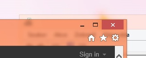

Glass lookYour windows will be rendered with transparent borders. This look allows you to see what is behind the border. The key element is the blurring of content behind the glass borders to prevent it from being too clear and disturbing. The result is very smart window border! |

|
Fully nativeThe utility is completely integrated into Desktop Window Manager without breaking any system protection or modifying system files. All rendering is done via native Direct3D device. Any colorization settings adjusted in Windows Control Panels are respected. Use color intensity slider to adjust the amount of the transparency.No custom skinning engine used. Due to the native nature of this utility your Windows theme is composited together with the glass effect. All features controlled through DWM API (e.g. DwmEnableBlurBehindWindow or DwmExtendFrameIntoClientArea) are supported including the taskbar or custom Start menu blur effect. |
Low resources usage!This library tries to utilize all DWM resources as much as possible to minimize RAM and VRAM usage. No redudant objects are created, no background service is running (Win8 only; Win8.1+ version needs light-weight background process to correctly load user's settings). The result is light-weight library which behaves exactly in the same way as Aero Glass in Windows 7 did. No performance degradation! |
|
Theme your windows!You can change the look of your windows borders completely without touching your Windows theme or using unsigned theme. This allows you to bring back several effects such as window shadow, caption glow effect, rounded borders or simply change the appearence of caption buttons. You just modify single bitmap in your favourite image editor and everything will look as you want! |